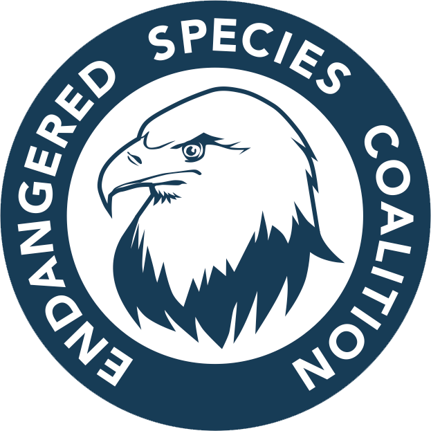
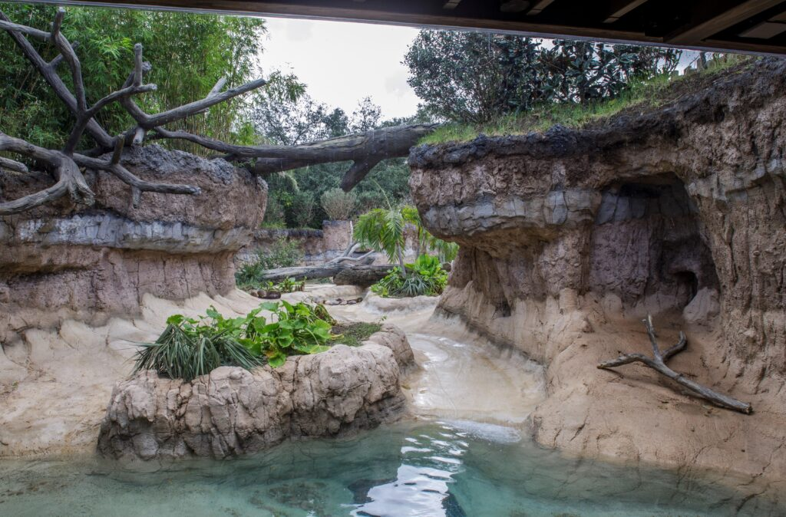

Endangered Species Programs
Endangered Species Programs help to protect and recover plants and animals that are thratened to be exstinct.

There are many things to help save endangered species, such as the Endangered Species Coalition.
How Zoos Create Habitats
Zoos create habitats for animals by designing landscape that mimics the enviornment the animals would be found at in nature.

A lot goes into creating a habitat in zoos. Learn More.